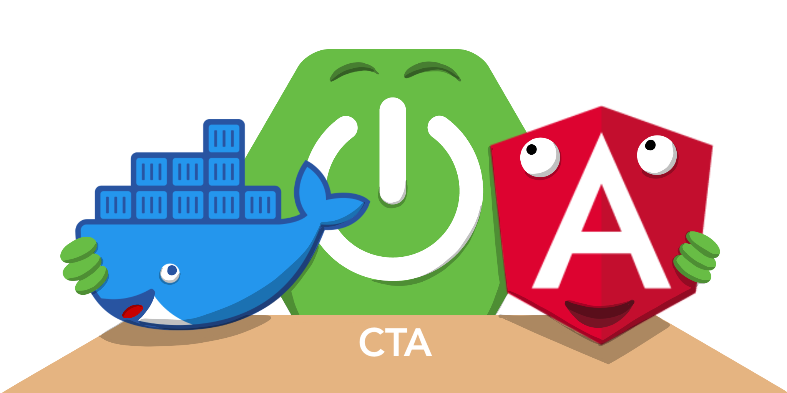

Bienvenu(e) sur l'application web CTA qui durant ce projet ATS nous a
permis de monter en compétences sur différents sujets.
Cette application a pour but de proposer une interface permettant à un
utilisateur de visualiser les données d'une ou plusieurs machines
auxquelles il a accès. Un utilisateur administrateur est également en
mesure de gérer la création de nouvelles entreprises, machines ou
utilisateurs.
Vous trouverez ci-dessous les différentes technologies que nous avons
utilisées pour ce projet :
Angular
Le framework JavaScript Angular est développé par Google et fait partie
des trois frameworks "client-side" les plus populaires depuis quelques
années maintenant. Utilisant le langage typescript, fournissant une
flopée d'outils intégrés ainsi qu'une communauté importante, Angular
s'est présenté comme un choix évident pour développer la partie client
de notre application web.
De plus, ce dernier nous permet de développer une "single-page
application" qui apporte un dynamisme proche des applications mobiles,
cette application est également capable de communiquer avec notre
back-end à l'aide du protocole HTTP.
Spring Boot
Afin de développer une API servant d'interface entre le front et la base
de données, mais gérant une partie de la logique de notre projet, nous
avons voulu essayer quelque chose de nouveau. Nous avons décidé de nous
orienter vers le framework Spring Boot basé sur le langage Java. Ce
dernier est utilisé dans de nombreux projets récents dans le milieu
professionel.
En effet, il intègre de nombreux "starters" permettant de démarrer
rapidement un projet en nous laissant le choix des outils que l'on veut
utiliser. Bien évidememnt, nous pouvons en rajouter tout au long du
projet. Enfin son ORM ou "Object Relational Mapping" Hibernate, permet
de communiquer avec une base de donnée et d'écrire de nombreuses
requêtes de façon très aisée.
Docker
La dernière technologie principale utilisée est très récente et
extrêmement puissante, c'est Docker. A travers cet outil, nous avons pu
mettre au point une architecture contenairisée.
En effet, chaque brique de notre application est alors englobée dans un
container et tous ces containers vont être capable de communiquer entre
eux. Le gros avantage de Docker est qu'il nous permet à travers ces
containers de ne pas dépendre de la configuration du serveur sur lequel
il est installé.
De plus, dans notre cas, Docker nous a semblé une bonne solution pour
déployer notre application et pouvoir nous en débarasser ou la mettre à
jour en n'ayant un minimum d'actions à réaliser.